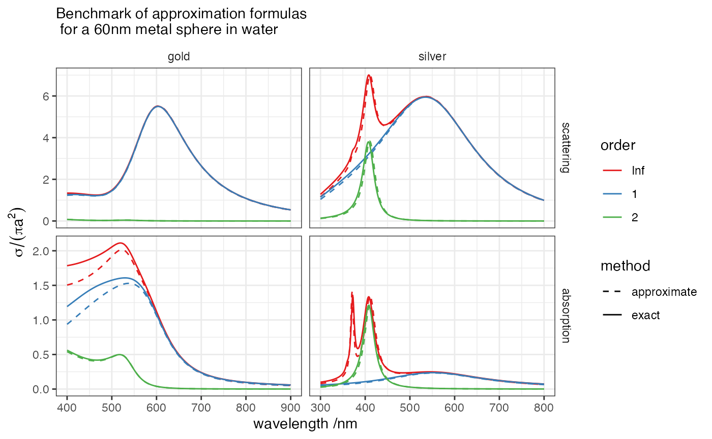

## Loading required package: plyrapproximate <- function(radius, material="gold", medium=1.33, order=Inf, ...){
material <- get(material)
s <- sqrt(material$epsilon) / medium
k <- 2*pi*medium / material$wavelength
x <- k*radius
s2 <- s^2
D1_0 <- 2i/3 * (s2 - 1)/(s2 + 2) * x^3
DE1_RC <- D1_0 / (1 - 3/5*x^2*(s2 - 2)/(s2 + 2) - D1_0 - 3/350*x^4 * (s^4 - 24*s2 + 16) / (s2 + 2))
## Delta <- D1_0
Delta <- DE1_RC
## Delta <- (2i/3*x^3*(s2 - 1)) / (s2+2 - 3/5*x^2*(s2-2) - 2i/3*x^3*(s2-1) - 3/350*x^4*(s^4 - 24*s2+16))
dip <-
transform(data.frame(wavelength=material$wavelength,
extinction = -2/x^2 * 3* Re(Delta),
scattering = 2/x^2 * 3* Mod(Delta)^2),
absorption = extinction - scattering,
order = 1)
if(order == 1)
return(dip)
Delta2 <- (1i*x^5/30*(s2-1)) / (s2+3/2+5/14*x^2-5/2646*x^4*(s^4+30*s2-45)-1i*x^5/30*(s2-1))
quad <-
transform(data.frame(wavelength=material$wavelength,
extinction = -2/x^2 * 5 * Re(Delta2),
scattering = 2/x^2 * 5* Mod(Delta2)^2),
absorption = extinction - scattering,
order = 2)
if(order == 2)
return(quad)
Delta3 <- (4i/4725*x^7*(s2-1)) / (s2 +4/3+7*x^2/135*(s2+4) - 7*x^4/10692*(s^4+8*s^2-32) - 4i*x^2/4725*(s2-1))
oct <-
transform(data.frame(wavelength=material$wavelength,
extinction = -2/x^2 * 7 * Re(Delta3),
scattering = 2/x^2 * 7 * Mod(Delta3)^2),
absorption = extinction - scattering,
order = 3)
all <- transform(dip,
extinction = extinction + quad$extinction + oct$extinction,
scattering = scattering + quad$scattering + oct$scattering,
absorption = absorption + quad$absorption + oct$absorption, order=Inf)
if(order == Inf)
return(all)
}
params <- expand.grid(order = c(1, 2, Inf), radius = c(60),
material = c("gold", "silver"),
mode = c( "EM"), stringsAsFactors=FALSE)
all <- mdply(params, exact, medium=1.33,
.progress="text")
all2 <- mdply(params, approximate, medium=1.33,
.progress="text")
m <- melt(list(exact = all, approximate=all2),
id=c("wavelength", "order", "material", "radius"),
measure=c("scattering", "absorption"))
m <- transform(m, order=factor(order, levels=c(Inf, 1, 2)))
mAu <- subset(m, material == "gold")
mAg <- subset(m, material == "silver")
p<-
ggplot(m, aes(wavelength, value, colour=order, group=interaction(order, L1)))+
facet_wrap(~material+variable, as.table=TRUE, scales="free") +
geom_line(aes(linetype=L1)) +
## geom_line(aes(colour=variable), data=m2) +
labs(x="wavelength /nm", y=expression(sigma/(pi*a^2)), colour="") +
labs(colour="order", linetype="method")+
scale_fill_brewer(palette="Pastel2")+
scale_colour_brewer(palette="Set1") +
scale_linetype_manual(values=c( "dashed", "solid"))
p